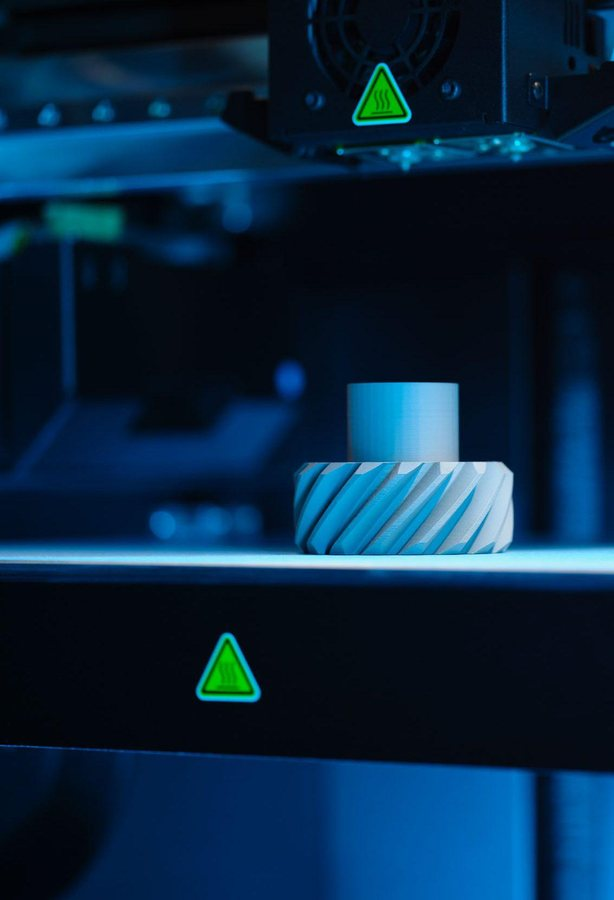
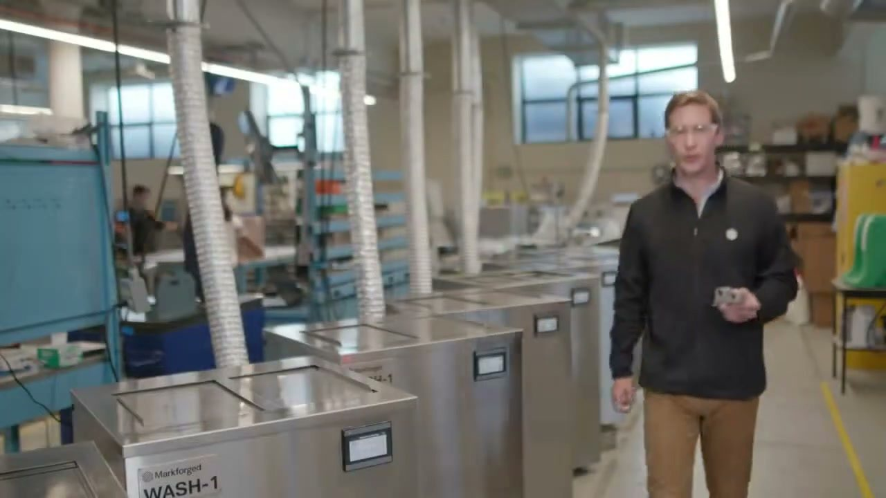
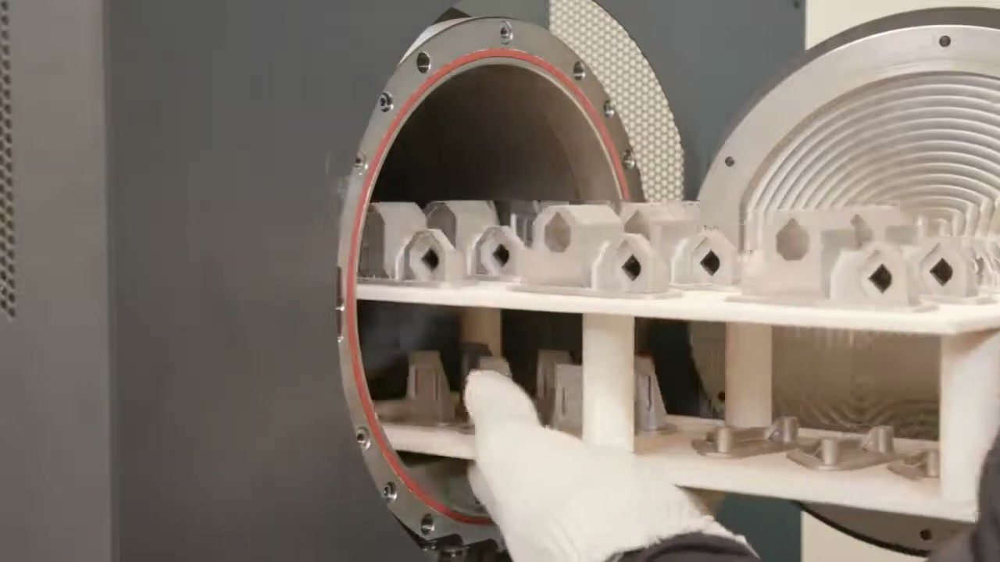

一套四件
從列印到燒結，完整的金屬流程
FX10 Sinter-2 Bundle 是一個完整配置，不是單機加購清單。四個部分各自負責金屬流程的一段，缺任何一段，金屬零件都無法在廠內完成。

01
FX10
複合材料＋金屬雙模式主機
- ・可列印空間 375 × 300 × 300 mm（兩種模式相同）
- ・雙噴頭：塑料＋連續纖維，自動換料
- ・雷射測微計與視覺模組，校正與檢查列印件

02
Metal Kit
可替換的金屬列印引擎
- ・含金屬列印頭、送料模組與料管
- ・17-4PH、316L 不鏽鋼與 H13 工具鋼
- ・燒結後層厚 127 µm

03
Wash-1
清洗脫脂站
- ・溶解生胚中的主要黏結劑
- ・清洗容積 18,356 cm³（356 × 254 × 203 mm）
- ・110–120 VAC 單相電源

04
Sinter-2
高溫燒結爐
- ・峰值 1,300°C，有效熱區 19,644 cm³
- ・標準週期約 30 小時；17-4PH 小件快速模式 17 小時
- ・適合中量批次生產與較大零件